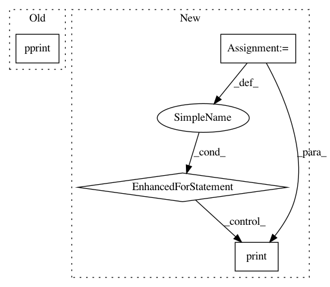

2baae0a182c2d83cff4f6a2830ffdb3b077e0676,skyalignments.py,,,#,251
Before Change
alignments = find_alignments(observer, waypoints, allpoints=args.allpoints)
if alignments:
print("\nFound Alignments from %s:" % observer.name)
pprint(alignments)
// save_alignments_as_GPX(alignments)
else:
print("Couldn"t find any alignments with %s" % observer.name)
After Change
if args.year:
year = args.year
else:
year = datetime.now().year
waypoints = []
for filename in args.waypointfiles:
if filename.lower().endswith("gpx"):
obs, wp = read_waypoint_file_GPX(filename)
elif filename.lower().endswith("csv"):
obs, wp = read_waypoint_file_CSV(filename)
else:
print("Unknown file type %s: skipping" % filename)
continue
if wp:
waypoints += wp
else:
print("No waypoints in", filename)
if obs:
observer_point = obs
if not waypoints:
parser.print_help()
sys.exit(1)
if not observer_point:
print("Using first waypoint for observer:", waypoints[0])
observer_point = waypoints[0]
if not args.allpoints:
waypoints = waypoints[1:]
observer = ephem.Observer()
// Observer will take degrees as a string, but if you pass it floats
// it expects radians, though that"s undocumented.
observer.lat = observer_point[1] * ephem.degree
observer.lon = observer_point[2] * ephem.degree
if len(observer_point) > 3:
observer.elevation = observer_point[3]
else:
observer.elevation = 500.0 // meters
if args.observername:
observer.name = args.observername
else:
observer.name = "%s %f, %f, %dm" % (observer_point[0],
observer.lat / ephem.degree,
observer.lon / ephem.degree,
observer.elevation)
// print(observer)
alignments = find_alignments(observer, waypoints,
year=year, allpoints=args.allpoints)
if alignments:
// pprint(alignments)
cur_observer = None
for a in alignments:
if a["observer"] != cur_observer:
cur_observer = a["observer"]
print("\nFrom %s:" % cur_observer)
print("%s, %s at %s (az %d +/- %.2f)"
% ( a["event"], a["target"],
a["time"],
a["azimuth"], a["slop"]))
// save_alignments_as_GPX(alignments)
else:
print("Couldn"t find any alignments with %s" % observer.name)
In pattern: SUPERPATTERN
Frequency: 3
Non-data size: 4
Instances
Project Name: akkana/scripts
Commit Name: 2baae0a182c2d83cff4f6a2830ffdb3b077e0676
Time: 2019-04-29
Author: akkana@shallowsky.com
File Name: skyalignments.py
Class Name:
Method Name:
Project Name: akkana/scripts
Commit Name: 37b633d2ac3f2e020f41f27d0769b57201f66f7d
Time: 2019-09-21
Author: akkana@shallowsky.com
File Name: censusdata.py
Class Name:
Method Name:
Project Name: mozilla/TTS
Commit Name: d96690f83f5bc804f532b6c2d5cca208de401e7a
Time: 2018-11-02
Author: egolge@mozilla.com
File Name: utils/audio.py
Class Name: AudioProcessor
Method Name: __init__